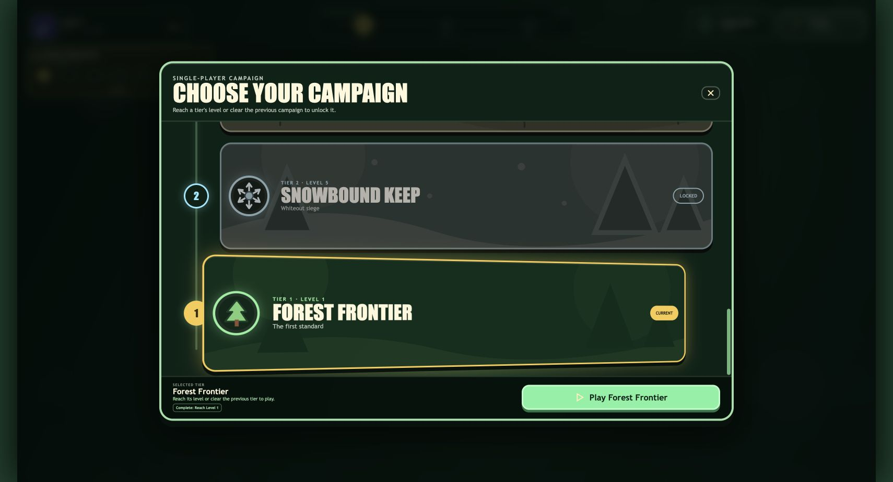

All biome weather uses one world-space field. Depleted nodes remain eligible for later infection, with nearest-node ID tie-breaking preserved.
FlagFort implementation review
Targeted systems update complete
World particles, Mire infection and boss behavior, mutation clarity, projectile AI, parasite telegraphs, and campaign progression now share deterministic, centralized behavior.
✓ All required checks passWhat changed
Projectile zombies ignore melee chase budgets and use turret-style intercept lead only against the moving player. Awakened parasites use the shared red melee countdown.
Mutation cards separate the configured base addition from previous and selected totals. Campaign tiers form a wide, bottom-to-top vertical track.
Verified campaign result

Behavior evidence
| Area | Before | Now | Status |
|---|---|---|---|
| Ambient particles | Mire positions were rebuilt from the camera each frame. | Every biome samples deterministic world coordinates and drift. | PASS |
| Resource reinfection | Zero-health nodes were rejected and active infection tracking dropped them. | Valid depleted nodes can be selected and reinfected; only active infection or destroyed state excludes them. | PASS |
| Mutation cards | Cumulative mutation values could read like the amount being added. | Configured base effect is shown above a gold previous-to-new comparison. | PASS |
| Projectile AI | Ranged enemies inherited melee chase timeout and fired directly at players. | Ranged pursuit stays active in range and shots lead current player velocity. | PASS |
| Mireheart Titan | One Lurker per second, including after shell break. | One per five seconds, permanently stopped once armor reaches zero. | PASS |
| Campaign modal | Two-column, short-card grid with clipped lower progression. | Highest-to-lowest DOM order produces a bottom-to-top track, with one full-width card per row. | PASS |
Verification
| Check | Result |
|---|---|
npm test | Passed |
npm run build | Passed |
npm run visual:validate | Passed |
git diff --check | Passed |
| Browser modal layout and physical flip | Passed at 1280×720 logical game size |
No audio selections, generated changelogs, save migrations, or unrelated gameplay systems were changed.